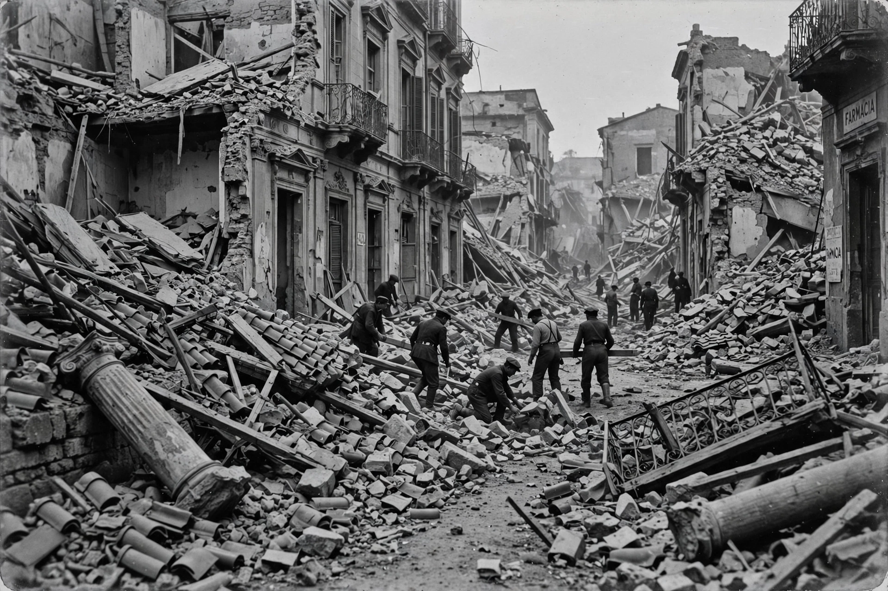

| 1908 Messina earthquake | |
|---|---|
 | |
| Date | 28 December 1908, 05:20 local time |
| Magnitude | 7.1 Mw |
| Epicentre | Strait of Messina, Italy |
| Deaths | ~75,000–82,000 (estimates vary) |
| Effects | Earthquake + tsunami; Messina and Reggio Calabria destroyed |
The 1908 Messina earthquake (also known as the Messina-Reggio earthquake) occurred on 28 December 1908 at 5:20 a.m. local time, devastating the cities of Messina in Sicily and Reggio Calabria on the Italian mainland across the Strait of Messina. With a moment magnitude of 7.1, it remains the deadliest recorded earthquake in European history.
The quake struck while most residents were asleep. In Messina, some 42 seconds of shaking collapsed more than 90 percent of buildings; a tsunami followed, with waves reported up to about 12 metres striking the coasts on both sides of the strait. Estimates of the death toll commonly range from 75,000 to 82,000, with some figures higher; Messina's population was roughly halved, and Reggio Calabria suffered losses in the thousands. Communications were destroyed, and news reached the outside world slowly.
Russian warships anchored nearby were among the first responders, followed by British, French, and American vessels, including the U.S. Great White Fleet, which happened to be passing through the Mediterranean. King Victor Emmanuel III and Queen Elena came to the stricken zone, and an international relief effort — including fundraising by governments and diaspora communities — supported survivors. Many orphans were adopted abroad, particularly in the United States.
Reconstruction introduced some of Italy's first anti-seismic building regulations. Messina was rebuilt on a new plan with wider streets and low, reinforced structures. The disaster remains a touchstone in Italian memory and in the history of seismology and disaster relief.